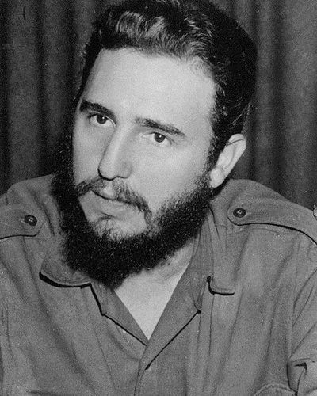

Ideologies / Radical Left
What is Castroism?
Castroism is a political ideology in the Radical Left family. The 1953 courtroom speech names José Martí as the inspiration of the rising against Batista and sets out five laws: restore the 1940 constitution, give land to those who work it, give workers a share of company profits, give sugar growers a share of the crop's yield, and confiscate wealth gained by fraud. The 1962 declaration, issued after Cuba was excluded from the Organization of American States, calls the revolution socialist, blames the poverty of Latin America on imperialism, and says that making the revolution is a duty across the continent.
National liberation that becomes socialist revolution.
Defined from: Fidel Castro, History Will Absolve Me (1953) and the Second Declaration of Havana (1962)
See how close you are to Castroism Dare a friend to answer as one


Where Castroism stands on 13 axes
Each axis runs from 0 to 100. A score of 50 is the middle. On a classic compass it sits in the Authoritarian Left quadrant.
| Axis | Position | Score | In words |
|---|---|---|---|
| EconomyMarket to Planned | 90 | Very strongly Planned | |
| OwnershipPrivate to Collective | 90 | Very strongly Collective | |
| RightsLiberty to Security | 75 | Strongly Security | |
| GovernmentDemocracy to Autocracy | 80 | Strongly Autocracy | |
| StructureDecentralised to Centralised | 85 | Very strongly Centralised | |
| NationInternationalist to Nationalist | 60 | Leans Nationalist | |
| ImmigrationMulticulturalist to Assimilationist | 40 | Leans Multiculturalist | |
| ValuesProgressive to Traditional | 30 | Strongly Progressive | |
| TechnologyAccelerationist to Precautionary | 30 | Strongly Accelerationist | |
| EnvironmentIndustrialist to Environmentalist | 25 | Strongly Industrialist | |
| ReligionSecular to Religious | 5 | Very strongly Secular | |
| MilitaryPacifist to Militarist | 85 | Very strongly Militarist | |
| TradeFree Trade to Protectionist | 65 | Leans Protectionist |
Ideologies closest to Castroism
- Blanquism88% alike
- Nkrumaism87% alike
- Guevarism86% alike
- Sankarism84% alike
- Marxism Leninism84% alike
Its opposite on this map is Tolstoyan Anarcho Pacifism, at 25%.
Parties near Castroism
26th of July Movement (Cuba) was the first party or movement to carry it, placed here from History Will Absolve Me (1953).
- Communist Party of CubaCuba. Conceptualización del Modelo Económico y Social Cubano (2021)86% alike
- Communist Party of China of 1940China. On New Democracy (1940)86% alike
- Communist Party of the Soviet UnionSoviet Union. Programme of the Communist Party of the Soviet Union (1961)83% alike
- Communist Party of China of 1981China. Resolution on Certain Questions in the History of Our Party (1981)83% alike
Common questions
What is Castroism?
Castroism is a political ideology in the Radical Left family. The 1953 courtroom speech names José Martí as the inspiration of the rising against Batista and sets out five laws: restore the 1940 constitution, give land to those who work it, give workers a share of company profits, give sugar growers a share of the crop's yield, and confiscate wealth gained by fraud. The 1962 declaration, issued after Cuba was excluded from the Organization of American States, calls the revolution socialist, blames the poverty of Latin America on imperialism, and says that making the revolution is a duty across the continent.
What does Castroism believe?
In one line: National liberation that becomes socialist revolution. Its strongest positions are Secular, Planned, Collective. The 1953 courtroom speech names José Martí as the inspiration of the rising against Batista and sets out five laws: restore the 1940 constitution, give land to those who work it, give workers a share of company profits, give sugar growers a share of the crop's yield, and confiscate wealth gained by fraud. The 1962 declaration, issued after Cuba was excluded from the Organization of American States, calls the revolution socialist, blames the poverty of Latin America on imperialism, and says that making the revolution is a duty across the continent.
Who founded Castroism?
Castroism is defined here from History Will Absolve Me (1953) and the Second Declaration of Havana (1962) by Fidel Castro. The thinker most tied to it is Fidel Castro (1926 to 2016).
Is Castroism left wing or right wing?
On a classic two axis compass Castroism falls in the Authoritarian Left quadrant, which means the economic left and the authoritarian side. Left and right hide a lot, though, which is why EthosScales scores it on thirteen separate axes.
How is Castroism different from Blanquism?
They are close: 88% alike. The biggest gaps are on Economy, where Castroism scores 90 and Blanquism scores 70, and Nation, where Castroism scores 60 and Blanquism scores 40. On each axis, 0 is one end and 100 is the other.
Think this is wrong? Suggest a correction. The scores are editorial estimates.